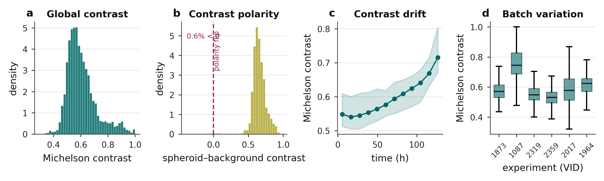
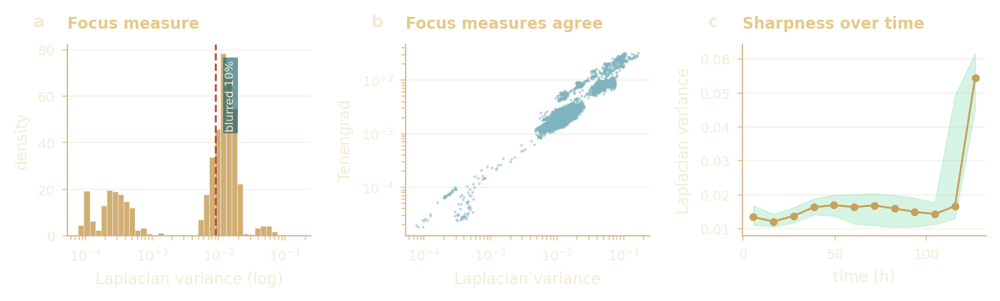
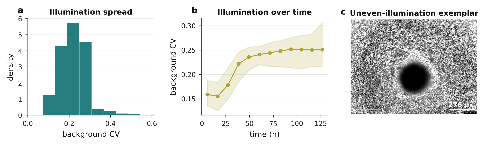
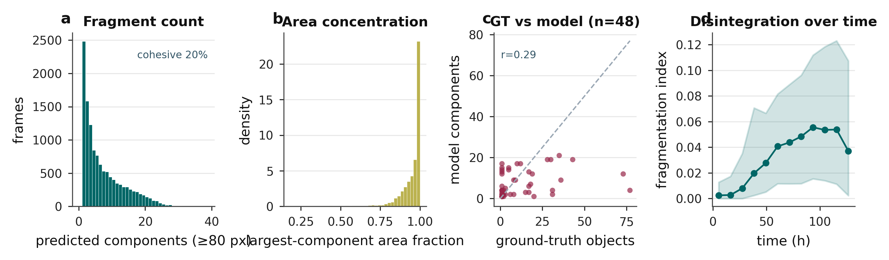
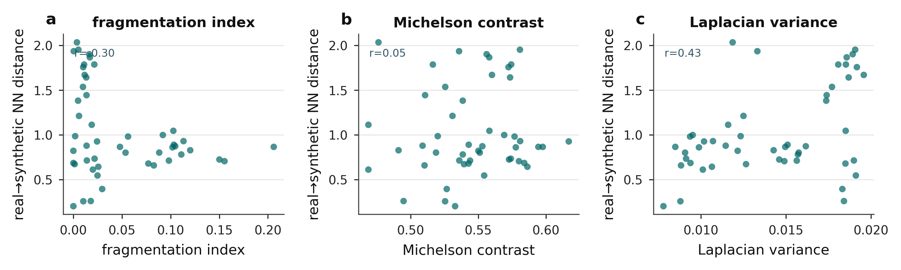

The imaging reads size and gross shape robustly, but contrast, focus and fragmentation limit the finer boundary features, the same loss that later caps CPM-parameter identifiability.
Brightfield microscopy of patient-derived CLL spheroids is low-contrast, unevenly lit, and frequently fragmented under drug treatment. This analysis characterises what the images are (intensity, contrast, focus, illumination and fragmentation), then traces each property to the segmentation, metric and feature choice it drove downstream. The dataset inventory itself, who and how much, now lives in Theme 00.
About 0.05% of the corpus, the defining constraint.
Contrast covered by aug.
~100%
Offline augmented set (shared by all models).
Focus covered by aug.
~91%
Laplacian-variance range spanned by augmentation.
Real wells out-of-library
~90%
Why the thesis reports relative shifts, not absolutes.
A. What does the raw signal look like?
why a learned segmenter, not thresholding
Contrast vs fragment count51 annotated frames
Contrast spans roughly 0.46 to 1.0 across the annotated set, and higher contrast couples to more fragments, because separating fragments exposes bright background between dark material.
The wide, regime-dependent contrast (and the fragment-debris intensity overlap it creates) is why a single global threshold cannot work and a learned segmenter is needed, with contrast-conditional preprocessing in the classical baseline.Decision: learned segmenter + contrast-conditional preprocessing
Focus spread across framesLaplacian variance, log scale
Brightfield focus spans about 0.9 orders of magnitude, and background illumination is uneven.
Both inject noise into boundary-derived shape features, the exact perimeter and circularity features the CPM inference relies on, so inversion is restricted to features that survive segmentation noise.Decision: restrict inversion features
Pooled pixel intensity is bimodal (a dark spheroid on a bright field); per-frame brightness clusters near mid-range, and frames use a median of 86% of the available 8-bit range.
The two intensity modes overlap once debris is present, so a single global threshold cannot separate object from background, so a learned segmenter is needed.Decision: learned segmenter

Contrast: level, polarity, drift, batchMichelson contrast across the corpus
Michelson contrast centres near 0.55 with only 0.6% of frames inverted (dark-on-light dominates), climbs over the time course (about 0.55 to 0.71), and varies between experiment batches.
Contrast is wide, regime-dependent and drifting, which is why the classical baseline needs contrast-conditional preprocessing and the production segmenter is learned.Decision: contrast-conditional preprocessing

Focus is bimodal and metric-agnosticLaplacian variance, log scale
Focus splits into a sharp main cluster and a blurred tail on a log scale, and two independent focus measures (Laplacian variance and Tenengrad) agree, so the spread is real, not an artefact of one metric.
Out-of-focus frames blur the boundary-derived perimeter and circularity features, reinforcing the restriction of inversion to features that survive segmentation noise.Decision: restrict inversion features

Illumination is uneven and worsens over timebackground coefficient of variation
Background illumination is uneven (CV about 0.2 to 0.25) and grows worse over the time course; the exemplar shows the shading and debris across the field (the dark disc at the centre is the spheroid itself).
Uneven background biases any intensity-based boundary, another reason the inversion leans on shape features that tolerate illumination drift.Decision: restrict inversion features
B. What is the object structure?
the segmentation criterion: feature preservation
Components per annotated imagehow multi-object the masks are
Most frames are not a single object (median 8 components; about 70% have more than one), and fragment sizes span four orders of magnitude, from the main body down to specks below 100 px.
Standard Dice is dominated by the largest component and is blind to small fragments, so CC-Dice (equal weight per component) is the right metric, and post-processing keeps the largest connected component.Decision: CC-Dice + largest component

Fragment structure of the maskscounts · area concentration · over time
Only about 20% of frames are a single cohesive object; most carry a long tail of fragments while the largest component still holds nearly all the area, and disintegration increases over the time course.
Because masks are multi-object but area-dominated, ordinary Dice would ignore the small fragments, so CC-Dice scores every component, and post-processing keeps the largest one.Decision: CC-Dice + largest component
C. A glimpse of the drug-response payoff
preview only · full analysis in Theme 05
Fragmentation by drug-mechanism classmedian fragmentation index, classes with n>=30
A single teaser: Syk-inhibitor and CXCR4-antagonist wells fragment most; BTK, NF-kB and MALT1 inhibitors sit lowest. Counts are large, unequal and plate-level, so this is read as an association only. The full drug-response analysis, auto-measured trajectories, per-drug inferred shifts and the BCR axis, lives in Theme 05.
Previews the RQ3 drug-response story and shows the most drug-responsive classes are the hardest to segment, which is exactly why the segmenter is chosen on feature preservation rather than pixel overlap.Preview only: full drug panel in Theme 05
D. From image quality to library coverage
why the thesis reports relative shifts

Image quality predicts distance from the libraryreal to nearest-synthetic distance
How far a real well sits from its nearest synthetic spheroid grows with fragmentation (r=0.30) and focus (r=0.43) but not with contrast (r=0.05): the qualities hardest to segment are also the least covered by the simulation library.
This is the mechanism behind the ~90% of real wells that fall outside the synthetic library, and the reason the inference is reported as relative shifts rather than absolute parameter values.Why relative shifts, not absolutes
Sources (canonical, executable)
This reader consolidates and re-orders the data EDA into the thesis's decision order. Interactive charts are computed from the same local CSVs the notebooks use (imaging_eda/cache/labelled_qc.csv, frame_qc.csv, rq1_segmentation/results/feature_validation/timecourse_full_features.csv); raster panels are the on-brand figures from the thesis figure set. Open the source notebooks for the full code and every panel:
thesis_submission/notebooks/RQ1_segmentation/01_data_eda.ipynb and imaging_eda/imaging_data_eda.ipynb.
An earlier broad notebook, data/cll_spheroid_eda_complete.ipynb, is catalogued as a referenced orphan in _provenance_notes.md.
A tunable quality bar
interactive, beyond the thesis
The thesis fixes quality thresholds once. Here you pick a quality metric and drag the bar to see exactly how many of the 12,480 frames survive.
Turns the fixed QC cutoffs into something you can interrogate across the whole corpus.Beyond the thesis: live QC
Complete analysis index
every thesis analysis in this theme
Each analysis, what it shows, its thesis label, and the result
Analysis
What it shows
Thesis label
Key result / status
Full data EDA
Intensity, contrast, focus, fragmentation over 51 annotated frames